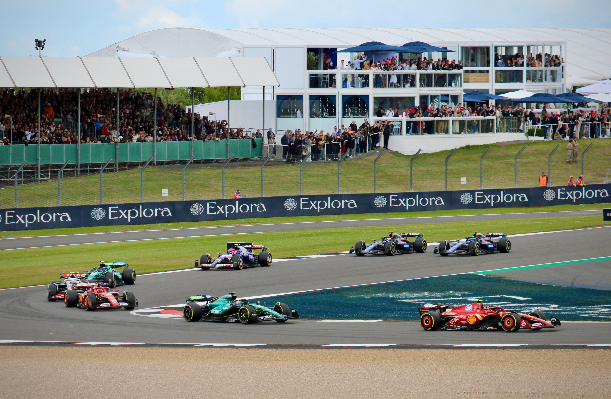

Sejarah Formula 1

Awal Mula Formula 1
Sejarah Formula 1 dimulai pada tahun 1950 ketika Federation Internationale de l'Automobile (FIA) menyelenggarakan Kejuaraan Dunia Formula 1 pertama. Balapan perdana berlangsung pada 13 Mei 1950 di Sirkuit Silverstone, Inggris. Giuseppe Farina dari Italia berhasil memenangkan kejuaraan dunia pembalap pertama pada musim tersebut. Sejak saat itu, Formula 1 mulai berkembang menjadi kompetisi balap internasional yang menarik perhatian banyak penggemar.
Pada masa awal penyelenggaraannya, mobil Formula 1 memiliki desain dan teknologi yang masih sederhana jika dibandingkan dengan mobil modern. Para pembalap harus menghadapi berbagai tantangan di lintasan, termasuk kondisi mobil dan sistem keselamatan yang belum secanggih sekarang. Meskipun demikian, kompetisi ini mulai melahirkan banyak pembalap berbakat yang kemudian dikenal sebagai legenda dalam dunia motorsport.
Perkembangan Teknologi dan Persaingan
Seiring berjalannya waktu, Formula 1 mengalami banyak perubahan, terutama dalam teknologi kendaraan. Perkembangan mesin, aerodinamika, sistem pengereman, dan desain mobil membuat performa kendaraan semakin meningkat. Setiap tim terus melakukan pengembangan untuk menciptakan mobil yang lebih cepat dan efisien agar mampu bersaing dengan tim lainnya.
Selain teknologi, persaingan antar pembalap juga menjadi bagian penting dalam sejarah Formula 1. Beberapa nama besar seperti Ayrton Senna, Alain Prost, Michael Schumacher, dan Lewis Hamilton berhasil mencatatkan prestasi yang luar biasa. Persaingan mereka menjadi salah satu bagian menarik yang membuat Formula 1 semakin dikenal oleh masyarakat di berbagai negara.
Formula 1 di Era Modern
Memasuki era modern, Formula 1 semakin berkembang dengan dukungan teknologi yang lebih canggih. Mobil F1 dilengkapi berbagai sistem yang dirancang untuk meningkatkan performa sekaligus keselamatan pembalap. Penggunaan teknologi hibrida, sistem pemulihan energi, serta pengembangan aerodinamika menjadi bagian dari perubahan dalam kompetisi ini.
Formula 1 juga semakin dekat dengan penggemarnya melalui siaran digital dan media sosial. Informasi mengenai balapan, pembalap, dan tim dapat diakses dengan lebih mudah. Hal ini membantu Formula 1 menjangkau penonton dari berbagai kalangan, termasuk generasi muda.
Formula 1 sebagai Ajang Balap Dunia
Hingga saat ini, Formula 1 terus menjadi salah satu ajang balap mobil paling populer di dunia. Setiap musim menghadirkan persaingan antara berbagai tim dan pembalap untuk memperebutkan gelar juara dunia. Selain menjadi kompetisi olahraga, Formula 1 juga menjadi tempat berkembangnya inovasi teknologi otomotif yang memberikan pengaruh terhadap industri kendaraan secara lebih luas.
Perjalanan panjang Formula 1 menunjukkan bagaimana sebuah kompetisi balap dapat terus berkembang mengikuti perubahan zaman. Mulai dari penyelenggaraan pertama pada tahun 1950 hingga menjadi ajang balap modern seperti sekarang, Formula 1 tetap mempertahankan daya tariknya melalui kecepatan, teknologi, strategi, dan persaingan di lintasan.